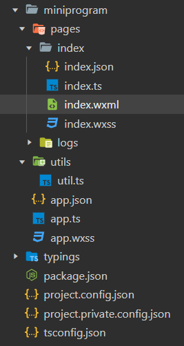
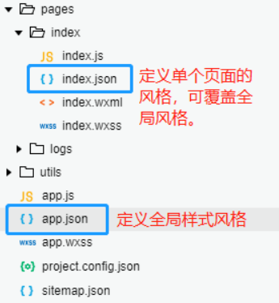
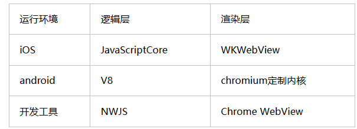
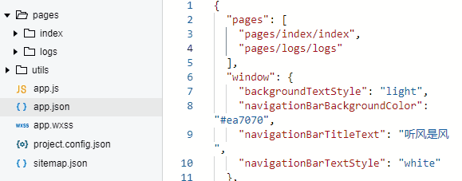

微信小程序开发（一）：工具与起步
本篇笔记部分内容整理自网络中的一些文章及视频，详见文末的“参考资料”部分。
一、开发工具介绍及常用调试方法
微信学堂：小程序开发起步
微信开放社区：调试能力-常用调试器面板使用
二、建立小程序项目
运行微信开发者工具,点击"+"按钮后，填写项目名称、目录等信息后，选择合适的模板后点击“创建”即可创建一个小程序项目。
其中，对一些基础模板的说明如下：
| 模板名称 | 特点 | 适用场景 |
|---|---|---|
| JS - 基础模板 | 基于 JavaScript，灵活性高、上手快，模板简洁 | 简单小程序（如个人博客、小型展示型）、初学者学习小程序基本开发原理 |
| TS - 基础模板 | 突出 TypeScript 的类型安全和可维护性，适合多人协作 | 大型团队开发的小程序、对稳定性要求高的小程序（如金融类、医疗类） |
| js_Skyline - 基础模板 | 基于 JavaScript，采用 Skyline 渲染引擎，性能高，精简 CSS 特性 | 对性能要求极高的小程序（如游戏类、视频播放类）、长列表展示场景（如商品列表、新闻资讯） |
| TS-Skyline - 基础模板 | 融合 TypeScript 的代码质量保障与 Skyline 的高性能渲染，减少卡顿和内存占用 | 大型高性能小程序项目（如大型企业级应用、功能复杂的社交类） |
| TS+Sass - 基础模板 | 结合 TypeScript 的静态类型检查与 Sass 的强大样式功能，语法严谨，适合大型项目 | 大型企业级小程序（如大型电商、企业资源管理）、需要复杂样式设计的小程序（如设计类、时尚类） |
| TS+Less - 基础模板 | 基于 TypeScript，采用 Less 预处理器，语法简洁灵活，允许使用 JavaScript 语法 | 中等规模项目（如小型电商、生活服务类）、对样式要求不复杂但需提高编写效率的项目 |
使用TS-基础模板创建的小程序项目结构如下图所示：

三、常用文件及项目结构
1.常用文件类型
小程序代码中的文件类型大致分为以下四种：
.wxml：微信模板文件，类似网页开发的html文件。.wxss：微信样式表文件，用于定于页面样式。.js：脚本文件，代码逻辑写在这。.json：静态数据配置文件。
2.项目中的重要文件
创建项目后，有一些重要的文件需要充分认识：
app.json：小程序全局配置文件
1 | |
此文件主要管理小程序的全局配置，如：
- 小程序页面路径
- 界面表现(标题，背景色，字体色)
- 网络超时时间
- 底部tab
其中，pages字段记录了小程序的所有页面路径（类似于vue中的路由表？）,添加或删除页面文件后需要在此处同步修改，以免小程序找不到页面；windows字段用于定于所有页面的顶部背景颜色，文字颜色，标题等，作为全局配置应用于所有页面。当然也可以在单个页面json配置中定义独特的风格覆盖全局配置。

project.config.json：开发者工具配置
用于定义开发者工具的个性化定制，如界面颜色，编译配置等等，类似于npm下的package.json，记录了项目使用的一些node包，在代码同步时无需同步这些包，只需要执行npm install即可根据package.json文件中的包信息临时下载安装。
wxml文件
对应于web中的html文件，将类似于div、p、span这样的标签换成了view、text等标签。此外，wxml还新增了例如wx:if类似的属性（跟vue挺像的）。同时，微信小程序也推行了MVVM做法，我们只用关心数据层，当数据发生变化，通过数据绑定的做法，模板中的表达式以及wx：等属性自动实现视图变化。
wxss样式
小程序中的样式表写法与网页开发类似，可以看到全局配置中和每个页面文件夹下都存在一个wxss文件，这点与json配置一样。我们可以在app.wxss中定义全局样式，而在页面下的wxss样式中定义此页面独有的页面。
四、小程序开发与web开发的不同点
- 浏览器渲染层与逻辑层都由同一线程处理，所以会存在堵塞的情况；但微信小程序由不同线程处理，逻辑层在jscore中。
 - web开发中能方便操作DOM、BOM，但微信小程序中没有完整的浏览器对象，所以无法操作DOM，类似JQuery的框架也无法正常运行。
- web开发中常用mpn引入三方库，但jscore环境与node.js不太相同，因此在网页开发中npm的包一部分在微信小程序中可能也无法使用。
五、快捷添加页面
前文提到，添加页面文件后需要在pages.json中同步修改，一般推荐添加页面时直接在pages数组中添加一个页面路径，保存后编辑器会自动生成一个页面。

六、json文件的编写规则
1.json文件都是被包裹在{}中，并以key-value方式展示。注意key一定要加上双引号，没加双引号或者加单引号都会报错。
2.其次，json的值只能以下几种：
- 数字
- 字符串(需要加双引号)
- 布尔值
- 数组(放在[]中)
- 对象(放在{}中)
- null
不支持undefined以及其它数据结构，否则会报错。
3.json文件不支持注释，添加任意注释都会引发报错。
参考资料
- 热爱技术的小郑.超详细微信小程序开发学习笔记，看完你也可以动手做微信小程序项目[EB/OL].(2024-08-20)[2025-07-28]. https://developer.aliyun.com/article/1590890 ↩
- 微信开放社区.开发 · 小程序开发从入门到进阶[EB/OL].(2021-08-24)[2025-07-28]. https://developers.weixin.qq.com/community/business ↩
- 听风是风.从零开始的微信小程序入门教程(一)[EB/OL].(2019-06-29)[2025-07-28]. https://www.cnblogs.com/echolun/p/11094605.html ↩